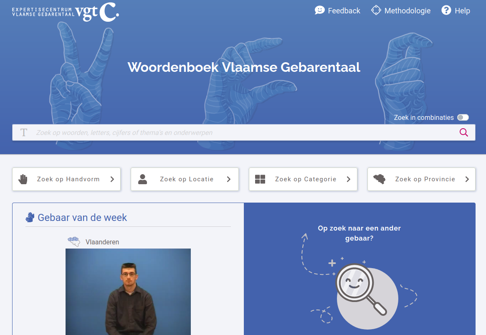

Het Woordenboek Vlaamse Gebarentaal-Nederlands (VGT-NL)
bevat meer dan tienduizend gebaren! Je kan er tekst ingeven en de relevante gebaren terugvinden. Zo kan je
er bijvoorbeeld leren hoe je "kat" kan gebaren, of hoe je je geboortestad gebaart.
Wat je nog niet kan doen in het woordenboek, is een gebaar ingeven en de betekenis ervan te weten komen.
Jammer, toch?
Deze demo toont een prototype van deze functionaliteit.

Om deze demo te maken, gebruiken we artificiële intelligentie. Meer bepaald maken we gebruik van diepe neurale netwerken. Ons netwerk heet Maia en Maia leert gebaren herkennen. Ze doet dit door naar heel veel voorbeelden van gebaren te kijken en te ontdekken waaruit deze gebaren bestaan.
In het woordenboek hebben we tienduizend gebaren, maar van elk gebaar maar één voorbeeld. Maia is wel slim, maar ze heeft meer voorbeelden nodig dan dit! Daarom gebruiken we andere video's om haar gebarentaal aan te leren. Dit is het VGT corpus en dit corpus bevat voor verschillende gebaren heel wat voorbeelden.
Als eerste stap analyseren we de bewegingen en handvormen in de video's. Met behulp van MediaPipe Holistic, technologie die ook in jouw smartphone zit, gaan we de video's verwerken om er een soort van "poppetjes" uit te halen. Kijk maar eens naar deze live demo. Zwaai maar eens!
Er is nog één probleem: we kunnen Maia niet alle gebaren in VGT aanleren: daarvoor hebben we niet genoeg voorbeelden. Gelukkig heeft ze wel geleerd om handvormen en bewegingen te herkennen. Deze demo vergelijkt de handvormen en bewegingen in jouw zoekopdracht met die in het woordenboek om zo gelijkaardige gebaren te vinden. Zo doorzoekt Maia de meer dan tienduizend gebaren in het woordenboek VGT-NL in een ogenblik!
Dit prototype maakt gebruik van de volgende technologieën: